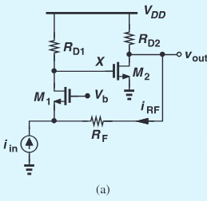

P1. 트랜스임피던스 귀환의 극성과 이득
주어진 조건
- 가정: $\lambda = 0$, $R_F$가 매우 큼
- 소자 값은 주어지지 않음 (답은 $g_m$, 저항의 식으로)
- 식 (12.72): $\dfrac{V_{out}}{I_{in}} = \dfrac{R_0}{1 + KR_0}$
구할 것
- (a) 귀환이 부귀환임을 증명
- (b) 개루프 이득
- (c) 폐루프 이득

원문 보기
그림 12.38(a)의 회로에서 $\lambda = 0$과 $R_F$가 매우 크다고 가정하고, (a) 귀환이 부귀환임을 증명하라. (b) 개루프 이득을 계산하라. (c) 폐루프 이득을 계산하라.
문제를 읽어요
전류원이 $M_1$의 소스에 신호를 넣고 $M_2$ 드레인에서 전압을 읽어요. 먼저 입력을 조금 늘려 $R_F$가 되돌리는 전류의 변화를 따라가요. 그런 다음 귀환을 풀고 구한 비를 이용해 연결했을 때의 비를 계산해요.
이 개념과 공식을 떠올려요
출력 전압을 감지해 입력에 전류를 돌려주므로 전압–전류 귀환(voltage–current feedback)이에요. 순방향 트랜스임피던스(transimpedance) $R_0$의 단위는 $\Omega$이고, 귀환율 $K$의 단위는 $\mathrm{S}$예요.
$\lambda=0$이면 두 MOS의 소신호 출력저항은 무한대예요. 큰 $R_F$ 조건은 출력 부하에 대한 비교와 입력 쪽 귀환 전류에 대한 비교로 나누어 써요.
종이에 쓸 첫 줄
$v_s$를 입력 노드의 소신호 전압으로 두고, 저항의 출력 쪽 끝에서 입력 쪽 끝을 빼요.
$$i_{RF}=\frac{v_{out}-v_s}{R_F}$$
이렇게 풀어요
(a) 귀환의 극성
$i_{in}$을 조금 늘리면 처음에는 소스 전압 $v_s$가 올라가요. $v_{gs1}=-v_s$이므로 드레인에서 소스로 흐르는 $M_1$의 전류가 줄고, $R_{D1}$의 전압 강하가 줄어 $v_X$가 올라가요.
$M_2$는 게이트 전압 $v_X$가 오르면 더 많은 전류를 끌어가요. 따라서 $v_{out}$이 내려가고, 출력에서 입력으로 들어오는 $i_{RF}$도 줄어요. 이 변화가 처음의 전류 증가를 상쇄해요.
(b) 개루프 트랜스임피던스
$R_F\gg R_{D2}$라서 순방향 이득을 구할 때 출력에 걸리는 귀환망 로딩을 생략해요. $X$에서 공통 게이트와 공통 소스 두 단을 나눠요.
$$R_0=\frac{v_{out}}{i_{in}}=\frac{v_X}{i_{in}}\frac{v_{out}}{v_X}$$
$R_F$를 떼면 $i_{in}$이 $M_1$ 소스에서 드레인으로 흘러 $v_X$를 올려요.
$$\frac{v_X}{i_{in}}\approx R_{D1}$$
$M_2$는 $R_{D2}$에 걸리는 전압을 반전시켜요.
$$\frac{v_{out}}{v_X}\approx -g_{m2}R_{D2}$$
(c) 폐루프 트랜스임피던스
반송 경로를 볼 때 입력 전류원을 개방하고 출력에 전압을 걸어요. 출력에서 입력으로 들어오는 화살표가 $i_{RF}$이고, 입력에서 빠져나가는 양을 $i_F=-i_{RF}$로 둬요.
출력에서 본 반송 경로에는 $R_F$와 공통 게이트 소스 쪽의 $1/g_{m1}$이 직렬이에요.
$$i_F=-\frac{v_{out}}{R_F+1/g_{m1}}$$
$R_F\gg 1/g_{m1}$이면
$$K=\frac{i_F}{v_{out}}\approx-\frac{1}{R_F}$$
순방향으로 남는 전류는 $i_{in}-Kv_{out}$이에요. 출력이 들어 있는 항을 왼쪽에 모아요.
$$v_{out}=R_0(i_{in}-Kv_{out})$$
$$(1+KR_0)v_{out}=R_0i_{in}$$
$$T=KR_0\approx\frac{g_{m2}R_{D1}R_{D2}}{R_F}$$
완성 답과 검산
(a) 극성 검산
부귀환이에요. $i_{in}$의 증가에 대해 입력으로 되돌아오는 $i_{RF}$는 감소해요.
반대로 입력을 줄여 보면 $v_X$가 내려가고 $v_{out}$은 올라가요. 이번에는 입력으로 반송되는 전류가 늘어 처음 감소분을 메워요.
(b) 단위와 부호
$\lambda=0$이고 $R_F\gg R_{D2}$이면 개루프 답은 $R_0\approx-g_{m2}R_{D1}R_{D2}$예요.
$\mathrm{S}\cdot\Omega^2=\Omega$예요. 입력 전류와 반대로 출력 전압이 변해 음의 부호도 맞아요.
(c) 귀환을 약하게 또는 강하게 했을 때
$\lambda=0$, $R_F\gg R_{D2}$, $R_F\gg1/g_{m1}$에서 폐루프 답은 다음과 같아요.
$$\boxed{\frac{v_{out}}{i_{in}}\approx\frac{-g_{m2}R_{D1}R_{D2}}{1+g_{m2}R_{D1}R_{D2}/R_F}}$$
$R_F\to\infty$이면 $T\to0$이라 개루프 값으로 돌아가요. 반대로 같은 로딩 근사에서 $T\gg1$이면 분모의 1을 생략해 $v_{out}/i_{in}\approx-R_F$를 얻어요.
주의할 점
$R_F$가 크다는 이유로 (c)에서도 가지를 지워 버리면 $K$가 0이 돼요. 부하를 작다고 두는 단계와, 남은 반송 전류가 큰 순방향 이득을 거치는 단계를 구분해요.
조건을 바꾸어 생각해요
- 두 로딩 근사가 성립하고 나머지 소자값은 고정이에요. $R_F$를 두 배로 하면 $T$와 폐루프 트랜스임피던스의 크기는 각각 어떻게 바뀌나요?
출력에서 입력으로 향하는 전류 $i_{RF}$의 변화가 입력 변화를 상쇄해요.
$\lambda=0$, $R_F\gg R_{D2},\,1/g_{m1}$일 때 $R_0\approx-g_{m2}R_{D1}R_{D2}$예요.
$i_F=-i_{RF}$이므로 $K\approx-1/R_F$예요.
$v_{out}/i_{in}=R_0/(1+KR_0)$에서 $KR_0\gg1$이면 답은 약 $-R_F$예요.